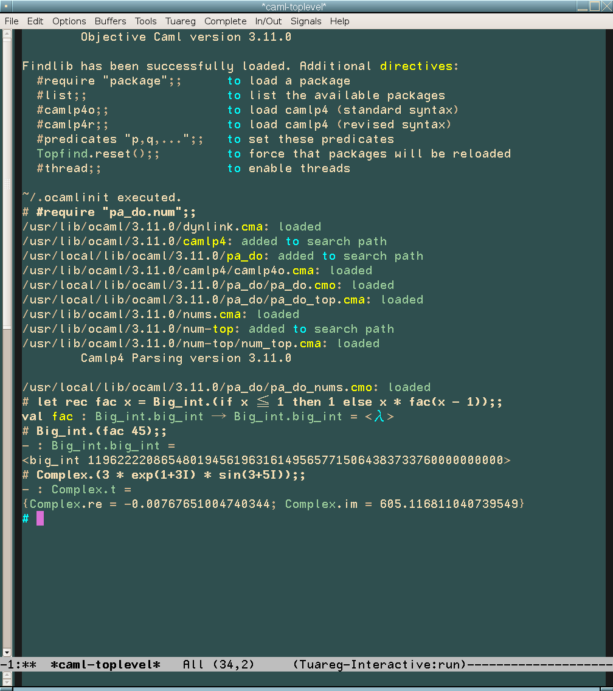

Delimited overloading is a syntax extension to ease the writing of efficient arithmetic expressions in OCaml. This project was sponsored by Jane Street Capital during their OCaml Summer Project 2008. We are very grateful for their support. See the complete proposal (PDF).
This project is hosted on OCamlForge.
Description
This project provides three syntax extensions provided by several modules. The information below should give you a taste of the possibilities of these syntax extensions but the main reference is the ocamldoc help.
pa_do
This module allows to locally overload operators and functions.
The syntax
is X.(e)
where X is a module
name and e is an
expression. For example, you can write
Big_int.( 23 ** 567 mod 45 + "123456789123456789123456789") Int64.(float(q * of_int n - (s * s) lsr 3)) /. float n Int32.(incr x)and this will be transformed into the appropriate
Big_int, Int64,
and Int32 function calls (the string will be
checked to represent a valid Big_int at compile
time). The standard OCaml numeric
modules Int32, Int64, Nativeint,
Complex (provided by the Pa_do.Numeric
module), Num, Big_int
and Ratio (in a separate
extension pa_do_nums because
they require the nums.cma library to be loaded in
camlp4 for static checking) are overloaded, as well as two
"phantom" modules Int and Float.
The Complex module use the name I to
denote the imaginary unit so one can write
Complex.(log(z + 2I) = I / u)
You can easily define your own overloadings by either using the
concrete syntax or
the API. As an
example, suppose you have a module X that defines
the usual arithmetic
functions, add, sub,
mul, div and the unary
negation neg. To be able to write expressions
using the usual arithmetic operators, like X.(x * y +
z), simply put
OVERLOAD_ARITHMETIC Xat the beginning of your source file. As another example, let us use the
Rope library. To make it more
like strings, one can declare
OVERLOAD_STRING Rope(of_string) OVERLOAD_COMPARISON Rope(compare) OVERLOAD Rope((^) -> concat2) OVERLOAD_STRING_GET Rope(get)With this one can just write
Rope.(if max s u <= "pre" ^ u
then s.[0] else u.[0]). Finally, for a polynomial
module Poly on the field of the reals, one probably
would like to use (the name of the functions have been chosen to
be self-documenting):
OVERLOAD_INT Poly(constant_int_poly) OVERLOAD_FLOAT Poly(constant_poly) OVERLOAD_ARITHMETIC Poly OVERLOAD Poly((=) -> equal; (<>) -> not_equal; ( ** ) -> pow) OVERLOAD_POLY_VAR Poly(var_of_string)Then one can use the natural looking
let p = Poly.(1 + `x
* `x + `x * `y + `x**k) to declare the
polynomial q with variables x
and y. Note that the library caches the evaluation
of constants so there will actually be only a
single var_of_string "x" for the entire source
file. To support Poly.(`x**2),
where 2 has not to be transformed into a
polynomial, one has to add a new rule with the
constants function from
the API.
Of course, to avoid putting the OVERLOAD declarations in every source file, one would usually prefer to write a syntax extension module and perform these tasks with the Delimited overloading API.
Macro
Pa_do.Macro enables macros compatible with
delimited overloading—and with other syntax extensions by
means of a
clear API. They provide a way write ad-hoc
polymorphic code. They also correct some design flaws of the
original macros (especially the interaction
of IFDEF and DEFINE).
As a simple example of what macros enable you to do, here is a generic "incrementor":
DEFINE INCR(M,x) = M.(x := !x + 1)You can then use it with
INCR(Int,
x), INCR(Float, x),... As a more
interesting example, here is a generic implementation of a
Runge-Kutta scheme of order 4 parametrized by a vector
space V (assuming that "+" is overloaded as the
vector addition and "*" denotes the scalar
multiplication with the floats first):
DEFINE RK4(M) =
let onesixth = 1. /. 6.
and onethird = 1. /. 3. in
fun ?(n=200) f t0 t1 x0 ->
let h = (t1 -. t0) /. float n in
let xt = Array.make (n + 1) x0 in
M.(
for i = 0 to Int.(n-1) do
let ti = t0 +. float i *. h
and xi = xt.(i) in
let ti5 = ti +. 0.5 *. h in
let k1 = h * f ti xi in
let k2 = h * f ti5 (xi + 0.5 * k1) in
let k3 = h * f ti5 (xi + 0.5 * k2) in
let k4 = h * f (ti +. h) (xi + k3) in
xt.(Int.(i + 1)) <- xi + onesixth * (k1 + k4) + onethird * (k2 + k3)
done);
xt
pa_infix
The purpose of pa_infix is to be able to say, for
any OCaml operator symbol, whether one wants it as prefix,
postfix or binary infix. It also allows to set the
associativity and precedence of operators. The easier way to
use it is to use
the concrete syntax.
For example to turn <+> into an binary infix
operator at the same level as +, you just write in
your source code:
INFIX ( <+> ) LEVEL ( + ) let ( <+> ) x y = (* definition of the operation *)To turn
++ into a post operator — thus
binding stronger than function application — simply use
POSTFIX ( ++ )You can then, for example, define it with
let ( ++ ) x = x
+ 1 and use it: let z = 3 ++. This
extension also allows to define purely alphabetical operators
(no digits, no underscore, no prime):
INFIX subset LEVEL ( && )Such an operator is used as the standard OCaml alphabetical operators such as
lsl: define it with let
( subset ) = ... and use it with a subset
x.
Beware that these operators become keywords and can therefore
not be used as variable names anymore.
If your definitions may be useful in several source files, we recommend you create a syntax extension module instead and use the API.
Getting the development version and contributing
This project uses bzr as its source control management. You can download the source and its history with
bzr branch http://bzr.ocamlcore.org/pa-do/pa-do/trunk pa-doYou can then hack on the code, commiting your modifications, and then submit your changes with
bzr bundle > file.patch(and post
file.patch
to
the one of the trackers) or
bzr send(and email the bundle to one of the developers).
For your convenience, a copy of the history is kept in the SVN repository (it may be updated slightly less frequently than the bzr repository). Here is more information on how to use bzr with OCamlForge.